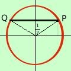
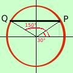

|
E' il primo tipo di equazione: cerchiamo di capire come risolverla con un esempio numerico Ricordo ancora che il termine dopo l'uguale puo' avere solamente i valori da -1 a +1 perche' il cerchio trigonometrico ha raggio 1 Prendiamo l'equazione:
Il valore del seno (1/2) e' un valore che si trova sull'asse verticale del cerchio trigonometrico  Se considero il valore 1/2 sull'asse verticale ad esso possono corrispondere due angoli (archi): uno a destra ed uno a sinistra dell'asse verticale  so che il valore di 1/2 per il seno corrisponde a 30° quindi il primo angolo sara' 30° ed il secondo sara' 180° - 30° = 150° Ti sarai accorto che per risolvere le equazioni devi conoscere molto bene i valori che assumono le funzioni trigonometriche; cioe' devi studiarti molto bene la tabella dei valori E se il valore che abbiamo non corrisponde ad uno dei valori in tabella cosa si deve fare? Questo fatto sara' generale: la soluzione dell'equazione sen x = h sara' sempre data dai due angoli x = x = 180° - e siccome siamo sul cerchio trigonometrico dovremo considerare tutte le soluzioni che differiscono di un giro completo
Noi ci accontentiamo dei naturali ;qualcuno considera invece i numeri interi (k = 0, +1, -1, +2, -2, +3, .....) perche' pensa di percorrere le circonferenze sul cerchio trigonometrico sia in senso orario che in senso antiorario Naturalmente la formula per l'angolo
E' anche possibile unificare le due formule in un'unica formula, ma perche' complicarsi la vita? Comunque se ti serve la formula e'
con k numero intero ( k = 0, 1, 2, 3, ...) in questo modo per valori pari l'angolo e' positivo e si somma mentre per valori dispari l'angolo diventa negativo e si sottrae: in definitiva si ottengono sempre gli stessi angoli Per esercizio prova a calcolare gli angoli per k=0, k=1, k=2 e k=3 applicando la formula all'esercizio iniziale |

|

|

|

|